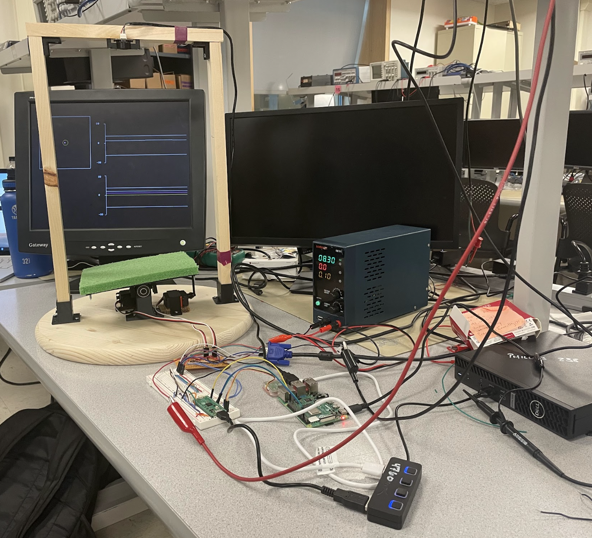
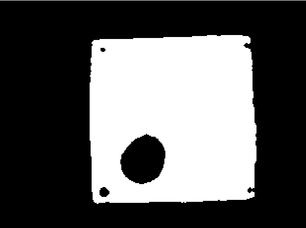
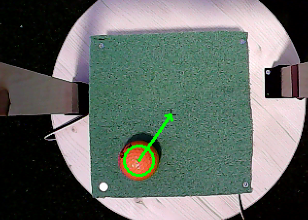
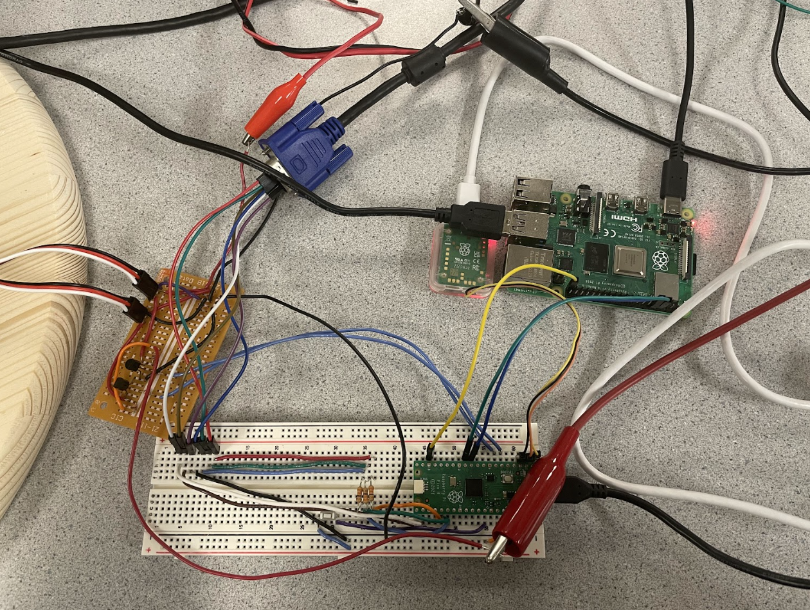
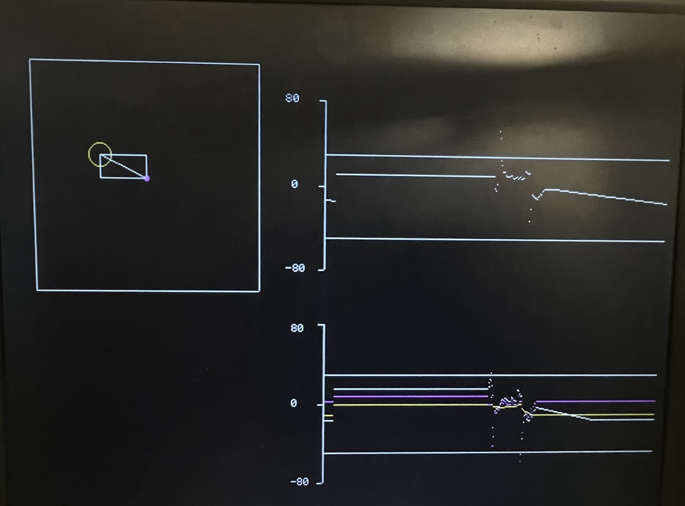
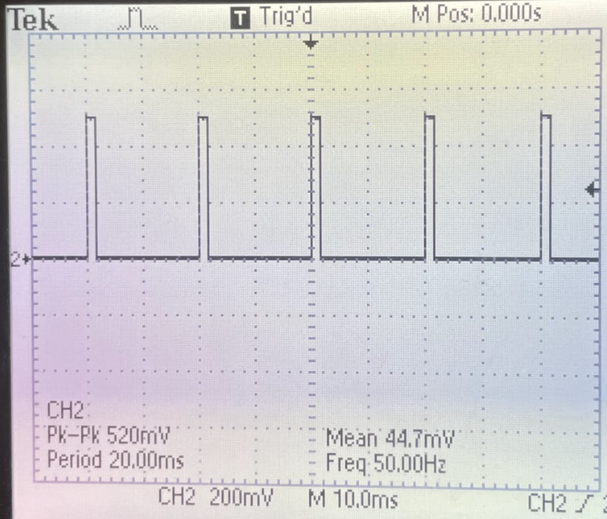
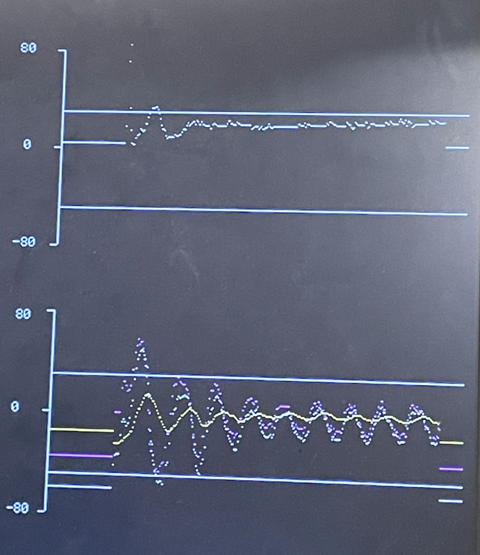

Introduction
This project implements a real-time ball balancing system using a single-camera vision setup and a two-axis tilting platform, controlled with a Raspberry Pi 4 and RP2040 microcontroller. Our project aimed to develop a ball balancing system that uses a top-mounted camera to track the 2D position of a ball on a tilting platform. The Raspberry Pi 4 handles image processing and position tracking, while we communicate the position to the RP2040 which controls the platform's tilt using two servos driven by PWM signals. The ball's position is continuously adjusted using a closed-loop PID controller to stabilize it at the center or balanced at a target position we can set. This project demonstrates real-time feedback control and image processing techniques, combining mechanical designs, software algorithms, and low-level hardware control.
Demo Video
Below is the link to our Project Demo Video:
High-Level Design
We wanted to build something physical and expand on our previous work in
the class implementing a PID controller for a one-degree-of-freedom
helicopter. Throughout development, we introduced several simplifying
assumptions to keep our implementation tractable while still capturing
the system’s behavior. By constraining the platform tilt to ±10°, we
applied the small-angle approximation (sin θ ≈ θ) to linearize
gravitational torque into a simple proportional term. Instead of
deriving a full forward-kinematic model for the servo linkages, we swept
each servo through its range, measured the resulting platform angles
with a digital level, and observed an approximately linear mapping
between PWM input and tilt. To further enhance stability, we mounted the
servo horns at the platform’s outer edge so that small servo-angle
adjustments produce correspondingly smaller angular responses, reducing
high-frequency jitter. Finally, we ignored secondary dynamics such as
joint friction (mitigated by our ball bearings), since these effects
were negligible compared to the dominant gravitational and inertial
forces.
We mounted a USB camera directly above the platform to provide a
continuous top-down view of the ball. The camera plugs into the
Raspberry Pi’s USB port, where we leverage OpenCV libraries to capture
each frame and apply color threshold-based processing to isolate the
ball’s center. Once we compute the ball’s x and y pixel coordinates, we
package them into a simple data string and stream it over UART to the
RP2040 for real-time control. Our vision loop runs at 30 Hz, which
provides more than enough bandwidth for this task given the ball’s
relatively high inertia and slow dynamics.
On the RP2040, multiple threads handle distinct tasks: a parser thread
processes incoming position data, a control thread runs the PID
algorithm and updates each servo’s PWM output, and a VGA thread redraws
live feedback, plotting error terms and the ball’s real-time position on
screen so we can visualize how those errors affect our control of the
system.
System block diagram
Program/hardware design
Full Project
Ball Tracking
Our ball-tracking script on the Raspberry Pi is organized into three parts: camera capture, ball detection, and UART transmission. In the camera capture stage, we initialize the USB camera on the Pi's USB port and enter a continuous loop to grab each raw frame. To speed up the image processing, we immediately resize every frame to 320x240 pixels. It wasn't necesay to use the full resolution to track the ball's position and this also reduces compute time for masks and contour calculations. During ball detection each frame is passed to the detect_ball function. Inside the detect_ball function, we apply a gaussian blur to reduce sensor noise and then convert the result to HSV color space. We threshold on a calibrated orange range to produce a binary mask and clean it with morphological open and close operations so the ball appears as a solid blob as shown below.
Binary Ball Tracking
After converting to a binary image, we call cv2.findContours() to extract all contours, select the largest one, and fit a minimum enclosing circle around it. If the detected radius exceeds our 10-pixel threshold, we assume it's the ball and return its (x, y, radius) tuple; otherwise, detect_ball returns None. Below, you can see the result overlaid with the detected circle and an arrow pointing to the platform's center. Initially, we wrote a script to compute the exact center dynamically, but found that tilting the platform didn't shift it enough to matter. Since the camera is mounted directly above the platform's center, we hard-coded the center as a black cross to eliminate random shifts and save extra computation on the Raspberry Pi.
Ball Tracking
In the UART transmission stage, the main loop checks whether detect_ball found a valid circle. When it does, we format the ball's pixel coordinates as a string (x,y) and send it over serial to the RP2040. This enables our microcontroller to respond to the ball's position in real time. We run the entire pipeline at 30 Hz, which is sufficient given the ball's relatively high inertia and the dynamic response of our balancing platform.
UART communication
The UART communication between the Raspberry Pi 4 and the RP2040 is a critical component of our project, enabling real-time data exchange for precise platform control. The RP2040, responsible for controlling the servos, receives continuous updates about the ball’s position from the Raspberry Pi. This data link is established using a UART connection, configured at a baud rate of 115200 bps, which we found to be a good balance between speed and data integrity. The physical wiring connects the RP2040’s UART1 interface, using GPIO 8 for transmission (TX) and GPIO 9 for reception (RX), with the corresponding UART pins on the Raspberry Pi. Proper grounding between the two devices was also essential to prevent signal noise and data corruption.
On the RP2040, the UART communication is managed through a protothread that constantly monitors incoming data. This thread reads each character from the UART buffer, looking for complete coordinate messages formatted as (x,y). Once a message is detected, it is parsed and smoothed using an exponential moving average to reduce jitter. The smoothing process uses a formula like smoothed_x = 0.4 * smoothed_x + 0.6 * num1, which balances stability and responsiveness. The resulting smoothed coordinates are then used to compute the position error relative to the platform’s center, clamped within a range of -80 to 80 to prevent overextension of the servos.
On the Raspberry Pi, the corresponding Python code uses a simple function to send the (x,y) data over UART. This function formats the message as a string before transmission, ensuring compatibility with the RP2040’s parser. Early versions of this code faced challenges with buffer overflows and signal noise, but these were resolved through careful tuning of the buffer size and smoothing parameters. Overall, this communication setup provides a stable and responsive link between the image processing and platform control components of our system.
System Wiring
Balancer Platform
We built the entire tilting platform from 3D-printed parts, assembled with screws and ball bearings, all anchored to a wooden base plate. The entire platform and the servo mounts were designed using Onshape CAD software. We assembled all the pieces and tested the structure’s motion in software first to minimize the number of reprints. For the pivot mechanism, we took inspiration from an existing design but upgraded it with ball bearings to achieve smooth rotation across all degrees of freedom. The 3D-printed tilt assembly is screwed directly to the wood, and a simple wooden structure holds the camera directly over the platform’s center for top-down view. We 3D-printed servo holders so we could screw the servos in place and then printed lever arms to connect the balancing platform to the servo. The lever arm attaches to the servo via a male connector with a screw hole, as shown below. 3D printing allowed us to rapidly prototype and create a simple structure that tilted with low friction. Finally, we chose a bright green mat and a contrasting orange ball to simplify color-based segmentation, making our vision pipeline both fast and reliable.
Ball platform Design
Balancer PID Servo control
The PID control system is the core of our platform’s stabilization mechanism, converting the ball’s position error into precise servo commands that adjust the platform’s tilt. This approach allows the system to rapidly and accurately respond to changes in the ball’s position, keeping it centered even as it moves dynamically. The RP2040 microcontroller manages this process, using a pair of PWM channels to drive the two servos that control the platform’s pitch and roll.
The servos are driven using pulse-width modulation (PWM) signals, which the RP2040 generates with a fixed frequency of 50Hz, the standard for most hobbyist servos. This frequency was chosen because it matches the servo’s expected control rate, providing consistent and smooth motion. The PWM duty cycle, which directly controls the servo angle, is calculated using the angle_to_level function. This function maps the desired angle, expressed in degrees, to a corresponding pulse width in microseconds. The range is typically 500 µs for 0° to 2500 µs for 180°, but we constrained this to 85° to 165° to avoid physical overextension and reduce the risk of mechanical wear. This narrower range reflects the actual tilt limits of our 3D-printed platform, ensuring stable operation even during aggressive ball movements.
The main control logic is implemented within the on_pwm_wrap interrupt service routine (ISR), which is called at the end of each PWM cycle. This ISR is critical for maintaining real-time control, as it ensures that the servo positions are updated as quickly as possible in response to changing ball positions. The ISR first clears the interrupt flag, then reads the current position error values (x_error and y_error) from the global variables that are continuously updated based on UART input from the Raspberry Pi. These errors are then converted from floating-point to fixed-point format for efficient computation, reflecting our decision to use fixed-point arithmetic throughout the PID loop to reduce computational overhead and improve real-time performance.
Within the ISR, the PID control is implemented as a sum of three terms: proportional, integral, and derivative. The proportional term (P) directly scales the current position error, providing immediate correction. The integral term (I) accumulates the sum of past errors, helping to eliminate steady-state offset by gradually reducing long-term drift. However, to prevent the integral term from growing too large and causing unstable behavior, the integral sum is clamped to a maximum value. This approach, known as anti-windup, prevents the integral term from overwhelming the other components of the PID controller during prolonged error conditions.
The derivative term (D) is particularly important for this application, as it adds a damping effect that helps stabilize rapid movements. It is calculated as the difference between the current error and the previous error, scaled by a derivative gain. To prevent noise from causing excessive correction, the derivative term is also clamped to a reasonable range. Once all three terms are computed, the final control output is smoothed using a low-pass filter to reduce jitter. This smoothing is achieved by blending the current control signal with the previous output, using a fixed weighting factor to strike a balance between responsiveness and stability.
Tuning the PID coefficients required extensive experimentation. Initial attempts with low derivative gains led to significant overshoot and oscillation, while excessive integral terms caused slow recovery from large disturbances. After several rounds of testing, we settled on a set of coefficients (P = 0.32, I = 0.2, D = 4.8) that provided responsive and stable performance across a wide range of operating conditions. This tuning, combined with the efficient fixed-point processing, enabled our system to maintain accurate control even under rapid, unpredictable ball movements.
VGA graphing PID during process
VGA Display
The VGA display in our project provides real-time visual feedback for both the ball’s position and the PID control signals, making it an essential tool for debugging and fine-tuning the system. The display is divided into two main sections: a graphical representation of the physical platform and a set of live data plots.
The VGA display in our project provides real-time visual feedback for both the ball’s position and the PID control signals, making it an essential tool for debugging and fine-tuning the system. The display is divided into two main sections: a graphical representation of the physical platform and a set of live data plots.
Additionally, the VGA thread plots the PID control signals in two separate graphs. The top graph shows the current servo angles, while the bottom graph displays the control error values. These plots use different colors to differentiate the proportional, integral, and derivative components, providing a clear view of the control dynamics. The thread includes a simple frame rate control mechanism to ensure the display updates smoothly, maintaining consistent performance even during rapid movements.
Results
PWM meets the deadline
For our final design, the ball balancer effectively demonstrated its core functions, including automatic centering and targeted corner positioning. The above image shows the PWM signals outputted by the RP2040.
In terms of basic balancing, the platform is generally able to stabilize the ball when it is gently pushed from any direction. This is because the PID controller responds quickly to small disturbances, correcting the ball’s position within a fraction of a second. However, the system struggles with more extreme inputs, such as when the ball is thrown onto the platform. In these cases, the ball’s initial speed and momentum often exceed the servos’ maximum response rate, leading to overshoot or instability. Although we did not conduct precise numerical measurements, our observations suggest that the system can consistently stabilize the ball when its speed is within the natural limits of the servos and platform. We plotted these servo operating limits as solid white lines (shown below on the VGA), and any control output beyond these bounds is clipped to prevent damage to the platform or servo motors.
PID Tuning
For the four-corner test, the system generally performed well, moving the ball to each corner in sequence with reasonable accuracy. However, we noticed a consistent issue with the bottom-right corner, where the ball sometimes failed to reach the exact target. We believe this is due to the foam platform’s physical characteristics. Because it was cut from a putting-green surface, its texture and “stimp” speed vary with direction, so friction differs depending on the ball’s path. These subtle surface irregularities introduce unpredictable resistance and prevent the integral term of our PID controller from fully compensating before the next corner command. Relying on a high integral gain in this situation caused the ball to accumulate error, and the only way to reset the integral term was by overshooting in the opposite direction, which occasionally sent the ball off the platform. To tune the four-corner routine successfully, we reduced the system’s responsiveness, trading peak speed for smoother, more controlled corner transitions.
During testing, we observed that once the ball reached its target it often wobbled because the servos continuously made small corrective motions. We traced this to our rounding in our position measurements. In our camera-tracking code we round the ball’s location to the nearest pixel. With a 320 × 240 frame, each pixel corresponds to a relatively large area in real space, so small sensor noise can cause the detected position to jump between adjacent pixels even when the ball is stationary. These pixel-level fluctuations then drive the derivative term of our PID controller, resulting in unnecessary control signals that keep the ball from coming fully to rest.
Safety considerations were also a critical part of our design. To prevent the servos from overextending and potentially damaging the platform, we carefully calibrated the servo angles before attaching the hinge, ensuring the platform operates within safe mechanical limits. Additionally, we tested for conditions that could cause the ball to fly off the platform, such as excessive initial velocity. We found that as long as the ball is placed or gently pushed onto the platform, the system maintains control, reducing the risk of the ball becoming a safety hazard.
Overall, our ball balancer proved to be a practical and reliable system for real-time stabilization, with a few minor limitations that can likely be addressed with further tuning and mechanical improvements.
Conclusion
Our ball balancer project largely met our initial design goals, demonstrating reliable real-time control and effective position stabilization. The system successfully balanced the ball in the center of the platform and reached predefined corner positions, aligning well with our original expectations. However, we did encounter some performance limitations, particularly in handling high-velocity ball movements and precise corner positioning. These challenges were partly due to the physical characteristics of our foam platform, which introduced unpredictable resistance at certain points. If we were to repeat this project, we might consider using a platform with a more uniform, low-friction surface to improve overall consistency. Additionally, upgrading to faster, higher-torque servos could enhance the system's ability to respond to rapid position changes.
In terms of standards, our design adhered to common best practices for embedded systems, including proper UART communication protocols, fixed-point arithmetic for efficient PID control, and well-defined electrical connections to avoid noise and interference. The servo control signals were also generated with precise timing to match the 50Hz standard required by hobbyist servos, ensuring smooth and accurate movements.
Regarding intellectual property, we primarily relied on our own code for the PID control, UART communication, and VGA visualization. We did not use any proprietary Altera IP, nor did we incorporate publicly available code without modification. Our design was inspired by widely available ball balancing projects, but we developed our own software from scratch, avoiding potential patent or trademark conflicts. Given the unique combination of image processing, real-time control, and mechanical design, there may be patent opportunities if we refine the system further, particularly if we can overcome the current platform stability challenges.
Appendix
Appendix A
"The group approves this report for inclusion on the course website."
"The group approves the video for inclusion on the course youtube channel."
Appendix B
Team members
Tommy Larson - tll68@cornell.edu
- Ball tracking algorithm
- Platform Machanical Design
- PID Implementation
Rachel Yan - sy625@cornell.edu
- UART communication program design
- VGA display program design
- PID Implementation
Refences
Code attachment
All code has been uploaded to this Github repository.
File "camera_track.py" has the code for the pi, and file "ball_balancer.c" has the code for the pico.